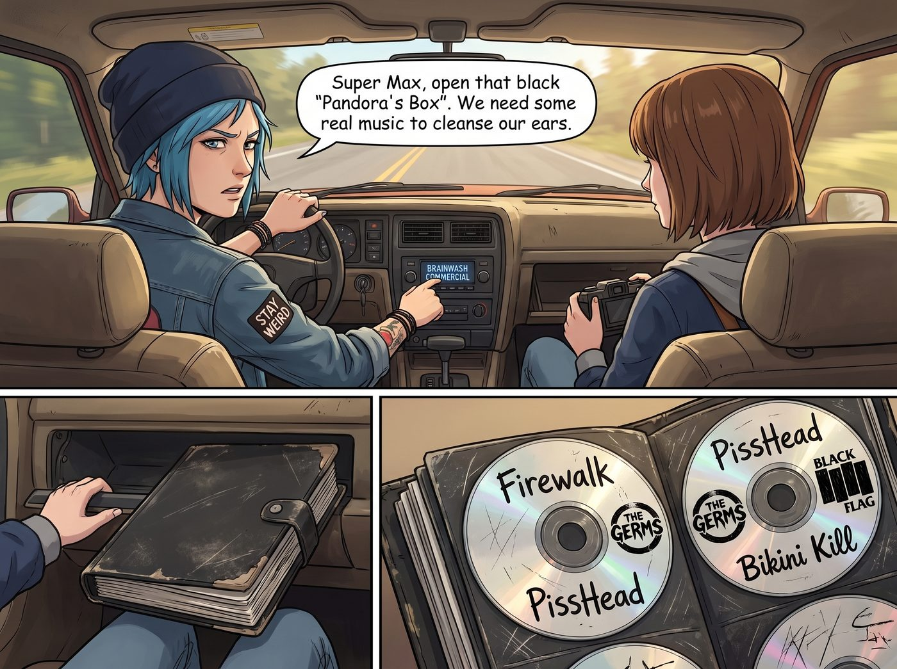

公路混音帶

在這輛被 Chloe 改裝得面目全非的猛禽皮卡裡，指望能連上藍牙或者收聽高音質的數位電台，無疑是痴人說夢：原廠的藍牙模組早在某次改裝線路時就被她拆了。更何況 Chloe 那根生鏽的車頂電台天線，早在離開西雅圖的第二天就被公路旁的樹枝徹底刮斷了。
這輛車的音樂靈魂，完全依賴於副駕駛座前方置物箱裡的一件「上古神器」——一個被加州陽光曬得邊緣翹起、沾著不明機油污漬的黑色 CD 光碟包。
對於兩個在《奇異人生》原作設定中深受千禧年獨立文化洗禮的女孩來說，串流媒體太過虛無，只有實體 CD 上用黑色奇異筆手寫的歌單，才配得上這場公路旅行。
「加州的電台全是在放那些甜膩得發指的流行電子樂，或者是在推銷二手車貸款。」
Chloe 一手扶著方向盤，另一隻手煩躁地關掉正在播放洗腦廣告的 FM 頻道。她看了一眼身邊的 Max：「超級麥克斯，打開那個黑色的『潘朵拉魔盒』。我們需要真正的音樂來洗洗耳朵。」
Max 熟練地拉開置物箱，拿出那個沈甸甸的光碟包。
翻開第一頁，全是 Chloe 狂野品味的證明：光碟表面佈滿了劃痕，上面用奇異筆狂草寫著 Firewalk（火行者，Arcadia Bay 曾經的地下龐克傳奇）、PissHead，以及各種硬核龐克和另類搖滾的金屬 Logo。
「我們現在可是開在一號公路上，看著太平洋的夕陽，」Max 皺了皺鼻子，果斷跳過了 Chloe 那幾張能把車頂掀翻的重金屬 CD，「妳確定要聽那種像是電鋸在切割鋼筋的音樂嗎？」
「那是憤怒的藝術，Max！那是喚醒靈魂的引擎！」Chloe 雖然嘴上抗議，但嘴角卻帶著笑，「好吧，今天讓妳當一次 DJ。選一張妳的。」
Max 往後翻了幾頁。光碟包的後半段，是她出發前精心燒錄的「私貨」。
上面的字跡工整娟秀，刻錄的全是她最愛的獨立民謠（Indie Folk）和另類獨立音樂（Alt-Indie）。
Max 抽出一張寫著「Syd Matters & Sparklehorse」的光碟，輕輕推進了那台老舊的車載 CD 機裡。
伴隨著一陣輕微的機械讀取聲和幾下雜音，音響裡傳來了 Syd Matters 那首著名的《To All of You》。溫暖、慵懶而略帶憂鬱的木吉他分解和弦，瞬間填滿了皮卡車狹小的空間。
音樂與車窗外金色的夕陽、海浪的拍打聲完美地融合在一起。
Chloe 單手掌控著方向盤，原本因為開了幾個小時車而緊繃的肩膀，在吉他聲中慢慢放鬆了下來。她輕輕跟著節奏用手指敲擊著方向盤。
「我得承認，」Chloe 偏過頭，看著 Max 被夕陽染成金色的側臉，「雖然我永遠熱愛龐克，但妳的音樂……確實有一種能讓時間慢下來的魔法。」
「因為它們是給靈魂呼吸的空間。」Max 靠在椅背上，看著窗外飛馳而過的海岸線，輕聲哼唱著。
接下來的幾個小時，CD 機裡輪播著她們共同的記憶與偏愛。
有 Jose Gonzalez 那首充滿救贖感的《Crosses》，有 Bright Eyes 那略帶神經質卻無比真誠的嘶吼，也有 Amanda Palmer 的鋼琴彈唱。
遇到皮卡車壓過坑洞時，老舊的 CD 機會偶爾「卡殼」跳針一下。但這不僅沒有破壞氣氛，反而增加了一種粗糙、真實的公路電影質感。
當夜幕降臨，公路前方只剩下車燈劈開的黑暗時，Max 終於妥協，將一張 Chloe 最愛的地下龐克合輯塞進了機器。
震耳欲聾的失真吉他和貝斯轟鳴聲瞬間炸響。
「這才是夜間飆車的專屬 BGM！」Chloe 興奮地踩下油門，跟著音響裡的主唱一起毫無形象地走音狂吼，甚至還騰出一隻手在空氣中彈起了「空氣吉他」。
Max 一開始還捂著耳朵抗議，但很快也被這種無所顧忌的狂熱感染了。她笑著搖下車窗，讓太平洋的冷風灌進車廂，跟著 Chloe 一起在無人的公路上對著黑夜放聲尖叫。
一張安靜的民謠，一張吵鬧的龐克。
就像 Max 的內斂與 Chloe 的張揚，截然不同，卻在這個狹小的車廂裡，構成了一張這個世界上最完美的 Mixtape（混音帶）。